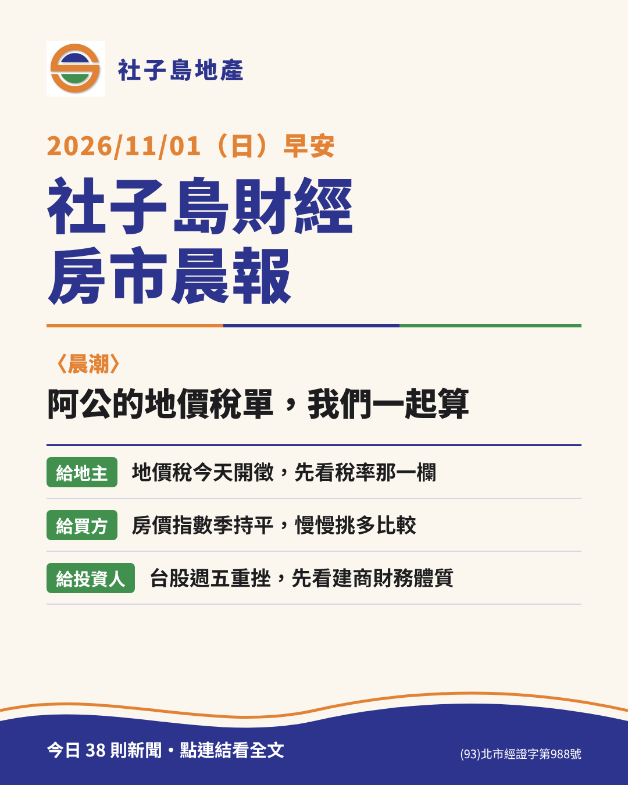

2026/11/01 (日) 早安
社子島財經房市晨報｜阿公的地價稅單，我們一起算
今日 38 則財經與房市新聞，依主題分成 10 類，社子島、主商圈與台北市的新聞排在最前面。點標題就能開啟原文。
〈潮汐表〉今天的三道潮水
- 給地主地價稅今天（11/1）開徵，繳到11/30；稅單先看「課稅地價」和「稅率」兩欄。自用住宅2‰今年的申請期限（9/22）已過，符合條件的現在申請，明年就能適用。
- 給買方10月房仲成交各有消長，信義第三季房價指數季持平、年增1.5%；價格膠著，正好慢慢挑、多比較。
- 給投資人台股週五重挫1156點、失守半年線；房貸餘額創高，建築貸款卻是10年最大減幅，週一開盤前先看建商體質。
〈晨潮〉
阿公的地價稅單，我們一起算
昨天阿公在島頭公園，從口袋拿出一張地價稅單問我們：「這張單仔的數字，到底是按怎算出來的？阮這款老厝，有法度算自用住宅、繳較俗嗎？」今天地價稅正式開徵，我們就用這個週日，陪阿公把這張單子看一遍。
稅單上的數字，到底怎麼來的？其實只有一條算式：課稅地價乘上稅率。課稅地價通常就是政府公告的地價，地主若沒有自己申報，就以公告地價的八成計算；稅率才是關鍵，一般土地從千分之十起跳，土地價值超過一定門檻，還會一級一級往上累進，最高到千分之五十五（《土地稅法》第16條）。
那阿公的老厝，能不能繳得比較少？答案是有機會。自己住的房子，底下的土地若符合自用住宅的條件，稅率只有千分之二（《土地稅法》第17條），和一般土地差了五倍以上。條件不複雜：本人、配偶或直系親屬在那裡設了戶籍，沒有出租、沒有做生意，房子是自己或家人的；都市土地以三公畝為限，而且一家人只能選一處。
可是阿公今年的稅單，為什麼沒有少？因為自用住宅要自己申請，期限是開徵前四十天，今年是9月22日，已經過了。不過不用懊惱，現在帶著身分證和稅單去稅捐處申請，符合條件的話，明年起就能適用；申請一次核准後，只要戶籍和使用情形不變，就不必每年重辦。社子島不少老厝年代久遠，房子和土地的權屬比較複雜，能不能過關，以稅捐處的認定為準，我們很樂意陪您先把資料理一理。
地價稅單，三步看懂
- 算式：地價稅＝課稅地價（多為公告地價）× 稅率。
- 稅率：一般用地千分之十起，超過累進起點地價者累進課徵，最高千分之五十五；自用住宅用地千分之二。
- 時程：繳納期間 11/1～11/30；自用住宅需在開徵前40天（今年9/22）申請，逾期改從明年適用。實際稅額與資格，以稅單及各地稅捐稽徵處公告為準。
市場這頭，10月房仲成交各有消長，台股週五重挫，週一開盤前再看一眼就好。今天的新聞已經分好類，往下滑就能看到；地價稅單上還有哪一欄看不懂，也歡迎問我們。
——社子島地產團隊
主商圈：社子島・北士科・關渡洲美平原6 則
社子島這幾天沒有新的開發進度，先放開發與交通的背景報導；北士科帶動北投預售量，連兩年居北市第一
台北市3 則
都更是台北市長辯論的焦點，兩位候選人的主張並列；南機場都更持續擴大
市地重劃・區段徵收3 則
新北、台中的區段徵收進度，與兩種開發方式的比較
利率・房貸・資金2 則
房貸餘額創高，建築融資反而緊縮
房市走向4 則
成交量各有消長，房價指數季持平
土地・產業用地5 則
商場、交通與產業進駐，帶動周邊土地的新用途
都更・老屋2 則
容積獎勵換社宅的成效，與老屋的真實行情
稅務與法律實務6 則
地價稅今天開徵，繳到11月30日；自用住宅稅率怎麼看，〈晨潮〉有整理
高齡與人口3 則
人老、屋也老，長輩的居住與安全
今日財經大事4 則
週末不開盤，回顧週五的台股，順便看一下這週的天氣
〈阿公講古〉
週日下午，阿公沿著堤防慢慢走，手上還捏著那張稅單。風從河面吹上來，有一點涼了。
「原來是要家己去申請。」他把稅單摺好收進口袋：「阮以早攏想講，住遮一世人，政府應該知影。好佳哉今年知影，明年就會當繳較俗。」
堤防上，有人在放風箏，有人推著嬰仔車。阿公說，這條堤防還沒蓋高以前，大水一來，田和厝都泡在水裡，他牽著自己的阿母，拚命往高的地方走。「這條堤防，是阮這款人的厝邊。」
走到一半，他想起隔壁的老朋友：「阿財講，伊欲趁這馬身體猶勇，先把地過戶予孫仔。先過戶較好，抑是留到以後予孫仔繼承較好？兩款的稅金，敢有差？」
阿公的問題，我們明天回答。
〈廟口泡茶區〉
阿公講完古，從堤防走下來，到廟口榕樹下坐定，茶已經泡好了。收到地價稅單、心裡有疑問的朋友，歡迎一起過來坐。
這一週我們聊了買賣、租賃、合建、區段徵收與市地重劃，哪一件最貼近您的心事？
想問問您：今年的地價稅單收到了嗎？上面哪一欄最看不懂？打個電話告訴我們，我們挑大家最常問的，下次泡茶時一起講。
不急著成交。我們是守在堤邊的人，守著每一塊土地的權益，直到把它交到願意耕耘它的人手上。
📞 歡迎先來電 0922-252-969先通個電話聊聊，再約時間來廟口喝茶。
 掃描 QR code，加 LINE 好友LINE ID：@shezidao💬 加 LINE
掃描 QR code，加 LINE 好友LINE ID：@shezidao💬 加 LINE
社子島地產團隊｜service@shezidao.com.tw
台北市士林區延平北路九段288號
週一至週六 9:30–18:00（週四 9:30–13:30），週日公休📞 來電 0922-252-969
本站由社子島地產開發有限公司經營，為民間不動產資訊網站，非臺北市政府官方網站；政府公告請以臺北市政府與地政局網站為準。
本期新聞由社子島地產團隊自經濟日報、聯合新聞網、自由時報、中時新聞網、ETtoday、中央廣播電臺、好房網、東森新聞、風傳媒、今周刊 等媒體收集，標題照原文，點擊即可開啟原始報導；法規說明僅供參考，實際權利義務以主管機關公告為準。〈晨潮〉〈阿公講古〉為本團隊之參考意見，不構成投資建議，亦不代表支持任何候選人。〈阿公講古〉的阿公，是我們依島上長輩的身影寫成的人物。